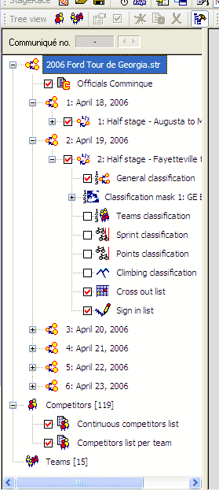
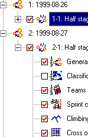
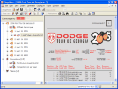
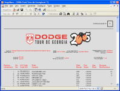

The configuration of an entire event is displayed as a tree structure in the left pane of the work space.

The tree has the following items:
The number of
competitors, spare competitors and teams is also displayed in the
event tree at the respective items, Competitors
and Teams.
Every item in the event tree can be selected by:
Note that keyboard users might need to switch views first to give focus to the event tree.
A tree item can be expanded by:
Note that all tree items can be expanded at once through in the menu.
Depending on the type of item you select in the tree:
Often the appropriate work view for an item will be the publication view, displaying the publication that is associated with the selected event item. Note that the root item has the table of contents associated with it.
These dialog windows can be opened through in the menu or by double-clicking on the selected item.
When communiqué numbering is selected in the general settings, all tree items that have publications associated with them are equipped with check boxes to publish these publications.

Through in the menu the event tree can be hidden.
In the same way a hidden event tree can be shown again.
 
Note that the event tree cannot be hidden when the right pane is displaying the blank work view, because doing so would not make any sense.